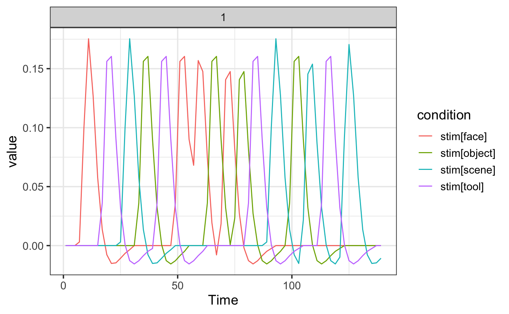
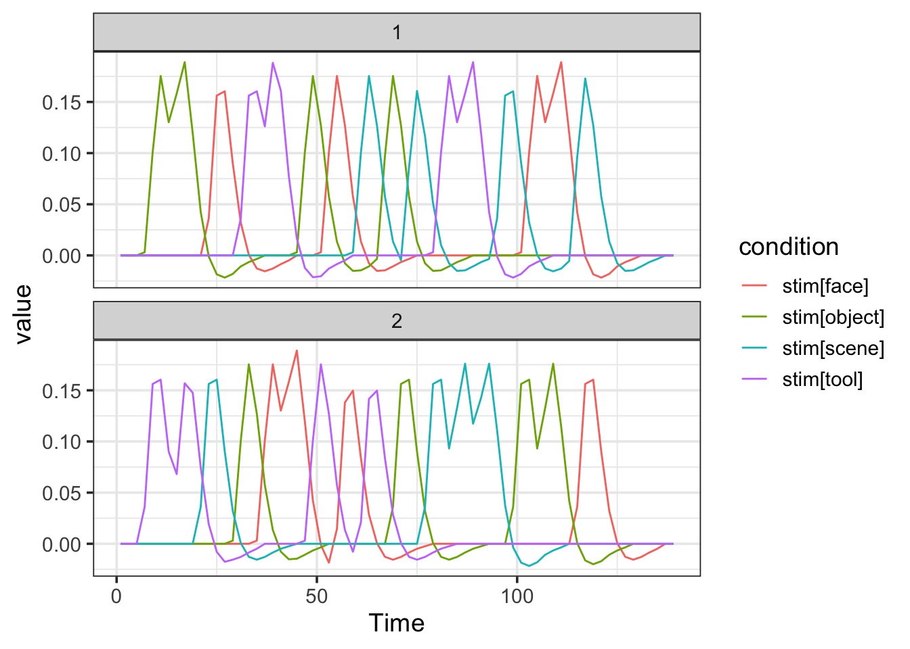
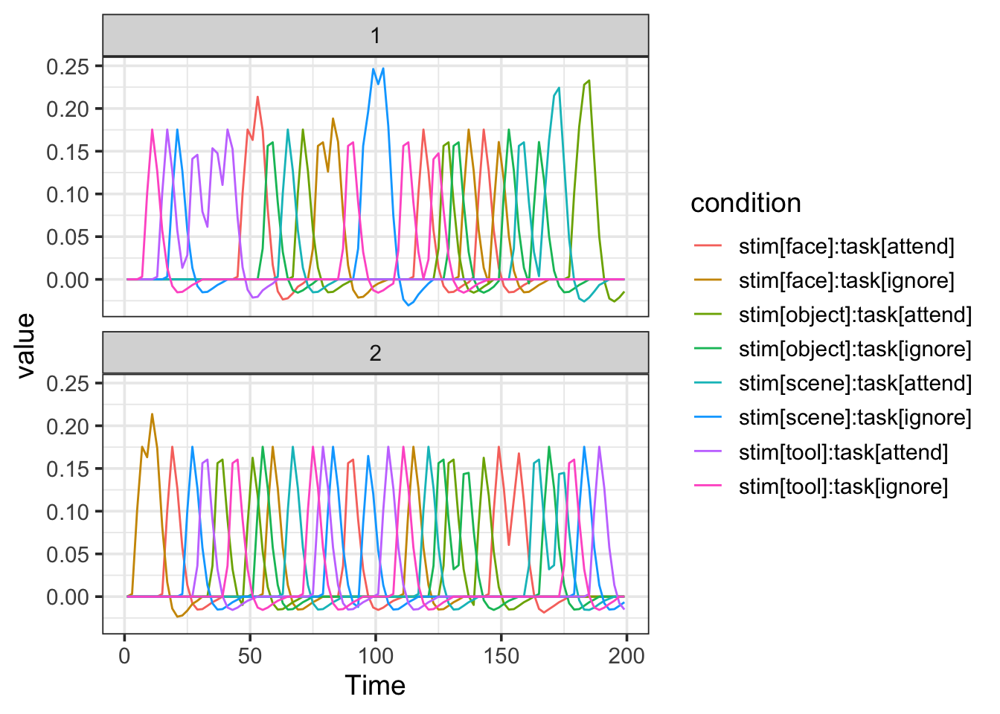

An “event model” is a description of an fMRI experiment, which consists of a collection of experimental “events” (stimuli/conditions/ rsponses) which are embedded in an experimental design. By convolving each event type with a hemodynamic response function we from a set of regressors that are used to model and make inferences about the BOLD response.
Consider a basic design, consisting of four stimulus types, each repeated 4 times over the course of a single scanning run. The stimuli are pictures of faces, scenes, tools and object presented for 2s a piece in a pseudorandom order. There is a uniformly distributed (4-7s) inter-stimulus interval (ISI) separating each stimulus presentation.
cond <- c("face", "scene", "tool", "object")
NSTIM <- length(cond)*4Now we contruct a “design table” by randomly sampling from the four conditions:
simple_design <- data.frame(stim=factor(sample(rep(cond, 4))),
ISI=sample(4:7, NSTIM, replace=TRUE),
run=rep(1, NSTIM))Event onsets are calculated as the cumulative sum of the ISI variables. Then we construct a sampling_frame which define the temporal sampling and block structure of the experiment. Here we have only 1 block and a repetition frequency (TR) of 2.
simple_design$onset <- cumsum(simple_design$ISI+2) -2
TR <- 2
sframe <- sampling_frame(blocklens=70, TR)Now the fun part. We create an event_model that describes the experimental model in terms of the stimulus onsets, conditions, and hemodynamic response function (‘hrf’).
emodel <- event_model(onset ~ hrf(stim), data=simple_design, block = ~ run, sampling_frame=sframe)print(emodel)## event_model
## onset ~ hrf(stim)
## Num Terms 1
## Num Events: 16
## Num Columns: 4
## Num Blocks: 1
##
## Term: 1 fmri_term: convolved_term
## Term Name: stim
## Formula: ~ (stim - 1)
## Num Events: 16
## Num Rows: 70
## Num Columns: 4
## Conditions: stim[face] stim[object] stim[scene] stim[tool]
## Term Types: event_factorAnd we can plot the model:
plot(emodel)
cond <- c("face", "scene", "tool", "object")
NSTIM <- length(cond)*4
## construct a design table with two blocks
design1 <- data.frame(stim=factor(sample(rep(cond, 4))),
ISI=sample(4:7, 16, replace=TRUE),
run=rep(1, NSTIM))
design2 <- data.frame(stim=factor(sample(rep(cond, 4))),
ISI=sample(4:7, 16, replace=TRUE),
run=rep(2, NSTIM))
design1$onset <- cumsum(design1$ISI+2) -2
design2$onset <- cumsum(design2$ISI+2) -2
design <- rbind(design1, design2)
## create a 'sampling_frame' describing the temporal outline of the scan consisting of 70 images collected every once every 2 seconds.
TR <- 2
sframe <- sampling_frame(blocklens=c(70,70), TR)
## create the event model d
emodel <- event_model(onset ~ hrf(stim), data=design, block = ~ run, sampling_frame=sframe)
print(emodel)## event_model
## onset ~ hrf(stim)
## Num Terms 1
## Num Events: 32
## Num Columns: 4
## Num Blocks: 2
##
## Term: 1 fmri_term: convolved_term
## Term Name: stim
## Formula: ~ (stim - 1)
## Num Events: 32
## Num Rows: 140
## Num Columns: 4
## Conditions: stim[face] stim[object] stim[scene] stim[tool]
## Term Types: event_factorplot(emodel)
cond1 <- c("face", "scene", "tool", "object")
cond2 <- c("attend", "ignore")
comb <- expand.grid(stim=cond1, task=cond2)
NSTIM <- nrow(comb) * 4
design <- do.call(rbind, lapply(1:2, function(i) {
ind <- sample(rep(1:nrow(comb), length.out=NSTIM))
d <- data.frame(stim=factor(comb$stim[ind]),
task=factor(comb$task[ind]),
ISI=sample(2:6, NSTIM, replace=TRUE),
run=rep(i, NSTIM))
d$onset <- cumsum(d$ISI+2) -2
d
}))
head(design)## stim task ISI run onset
## 1 tool attend 3 1 3
## 2 face attend 5 1 10
## 3 scene attend 6 1 18
## 4 tool ignore 5 1 25
## 5 object ignore 5 1 32
## 6 scene attend 6 1 40## create a 'sampling_frame' describing the temporal outline of the scan consisting of 70 images collected every once every 2 seconds.
TR <- 2
sframe <- sampling_frame(blocklens=c(100,100), TR)
## create the event model d
emodel <- event_model(onset ~ hrf(stim, task), data=design, block = ~ run, sampling_frame=sframe)
print(emodel)## event_model
## onset ~ hrf(stim, task)
## Num Terms 1
## Num Events: 64
## Num Columns: 8
## Num Blocks: 2
##
## Term: 1 fmri_term: convolved_term
## Term Name: stim:task
## Formula: ~ (stim:task - 1)
## Num Events: 64
## Num Rows: 200
## Num Columns: 8
## Conditions: stim[face]:task[attend] stim[scene]:task[attend] stim[tool]:task[attend] stim[object]:task[attend] stim[face]:task[ignore] stim[scene]:task[ignore] stim[tool]:task[ignore] stim[object]:task[ignore]
## Term Types: event_factor event_factorplot(emodel)